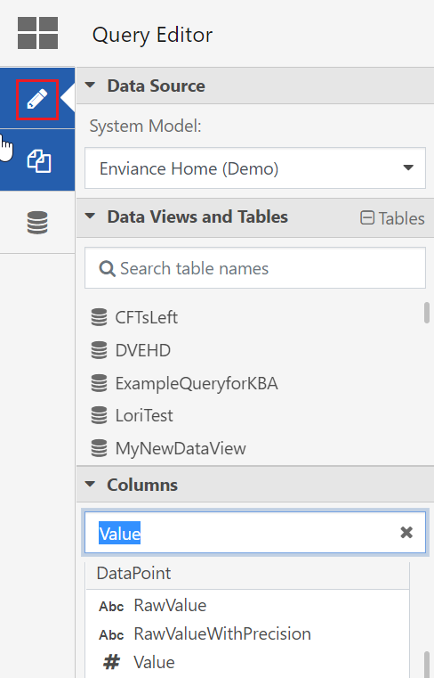

With the Query Editor you can create, edit, and save EQL queries using the drag-and-drop functionality of the Visual Editor, or with standard EQL syntax in the EQL Editor. Advanced users can save queries as Data Views. All users can work with a saved Data View on its own to quickly generate reports and simple charts with a more targeted set of data, and can even use it alongside standard EQL tables to create increasingly sophisticated queries and data structures.
Users (even those in the Administrators group) must be in the package role 'DataViewCreateAndEdit' to create Data Views and access the Data Views Library.
When opening the Data Preparation Tool, the Query Editor will be active by default. To access the Query Editor from the Query Library or Data Views Library, click the icon top left.
